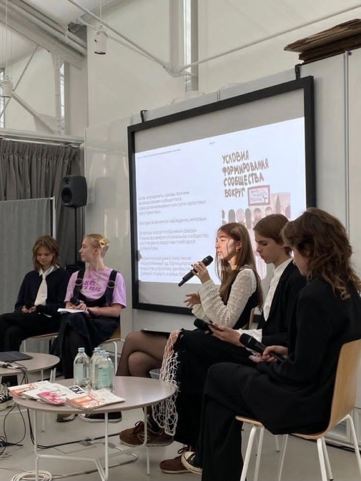

Not every quiet moment happens alone. This one was a discussion about how communities form around shared creative spaces — sitting alongside people who think carefully about the things I only feel instinctively. I was nervous holding the microphone, but it turned into one of my favorite conversations this year.